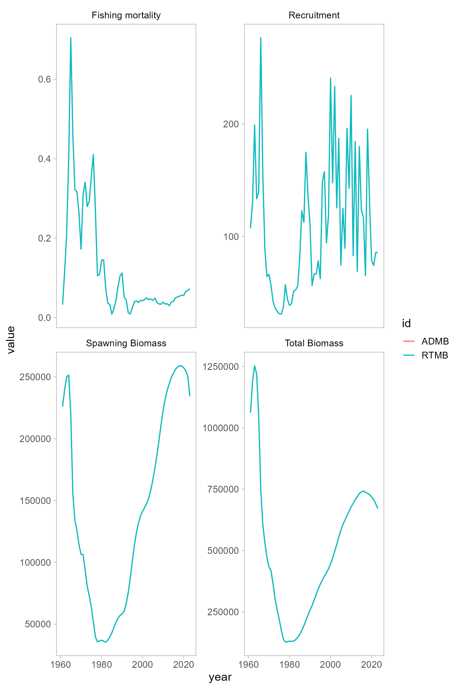
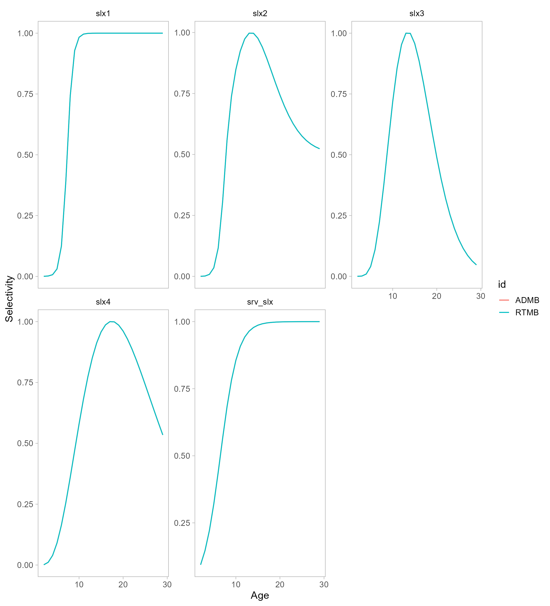
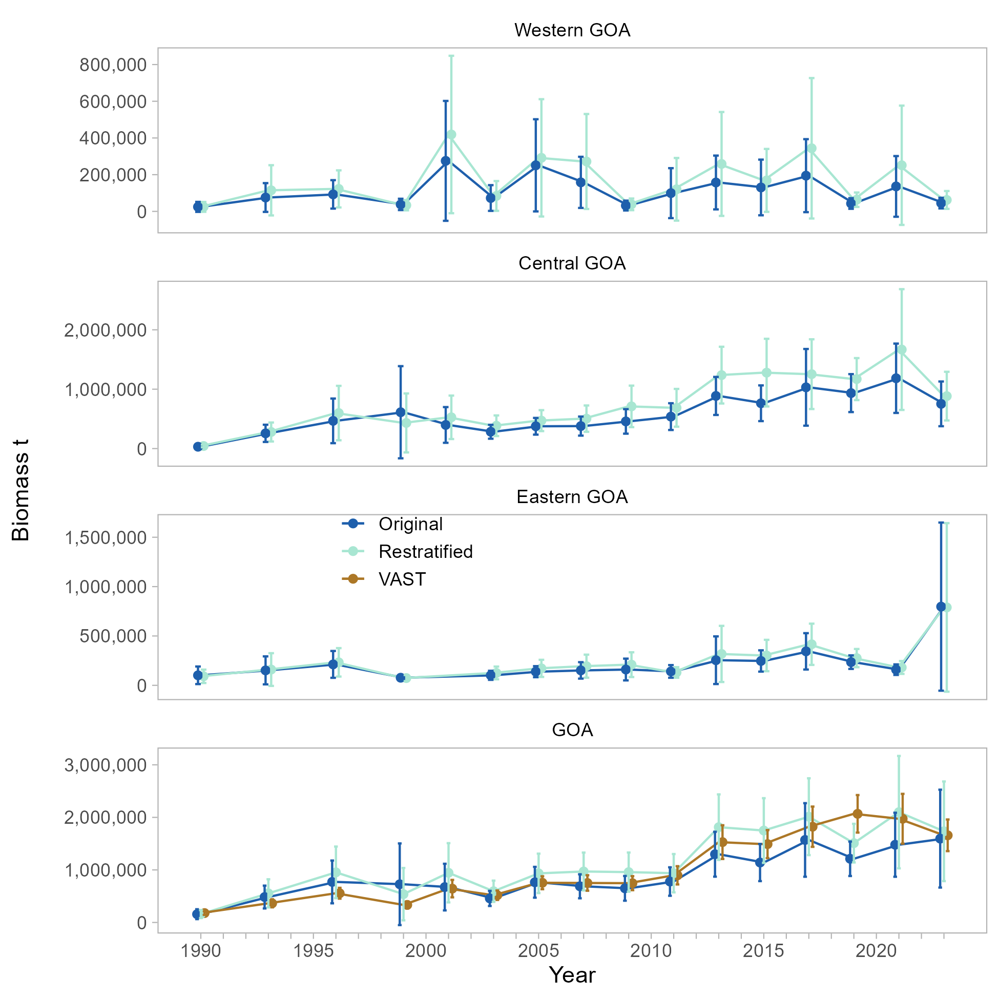
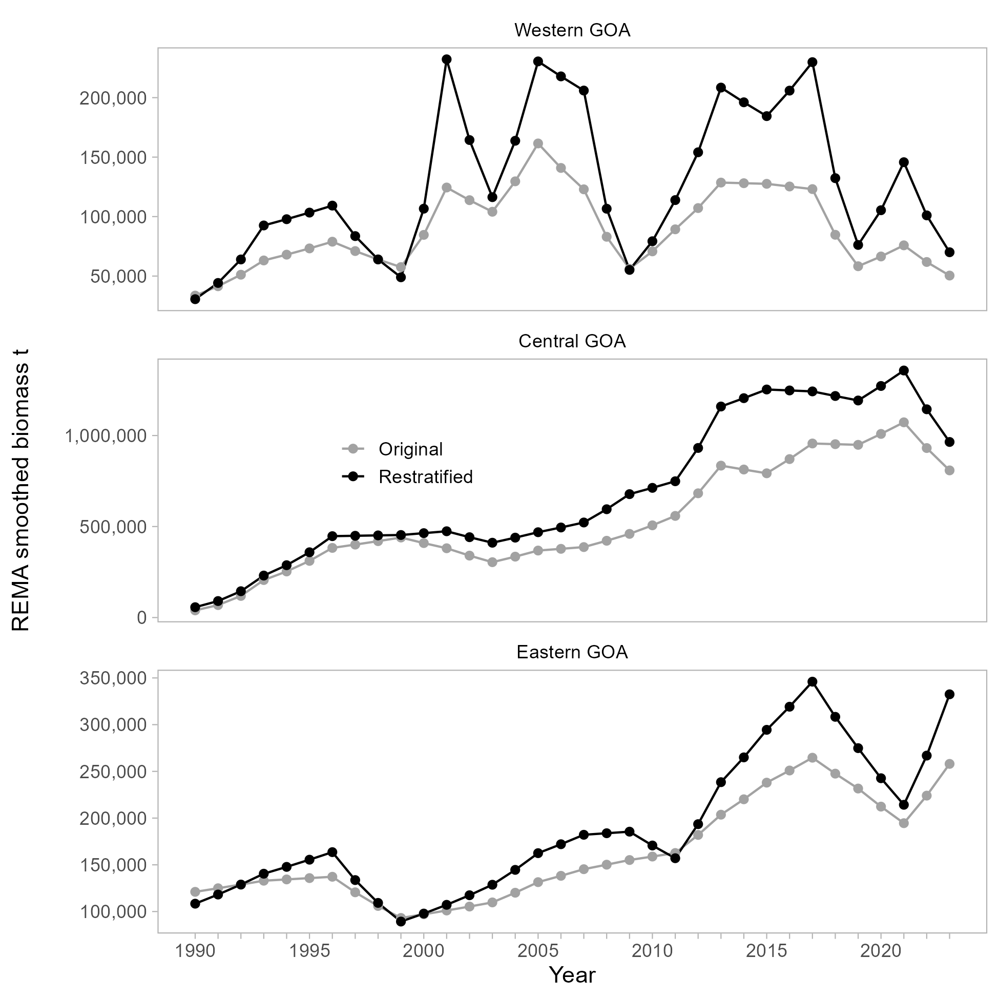
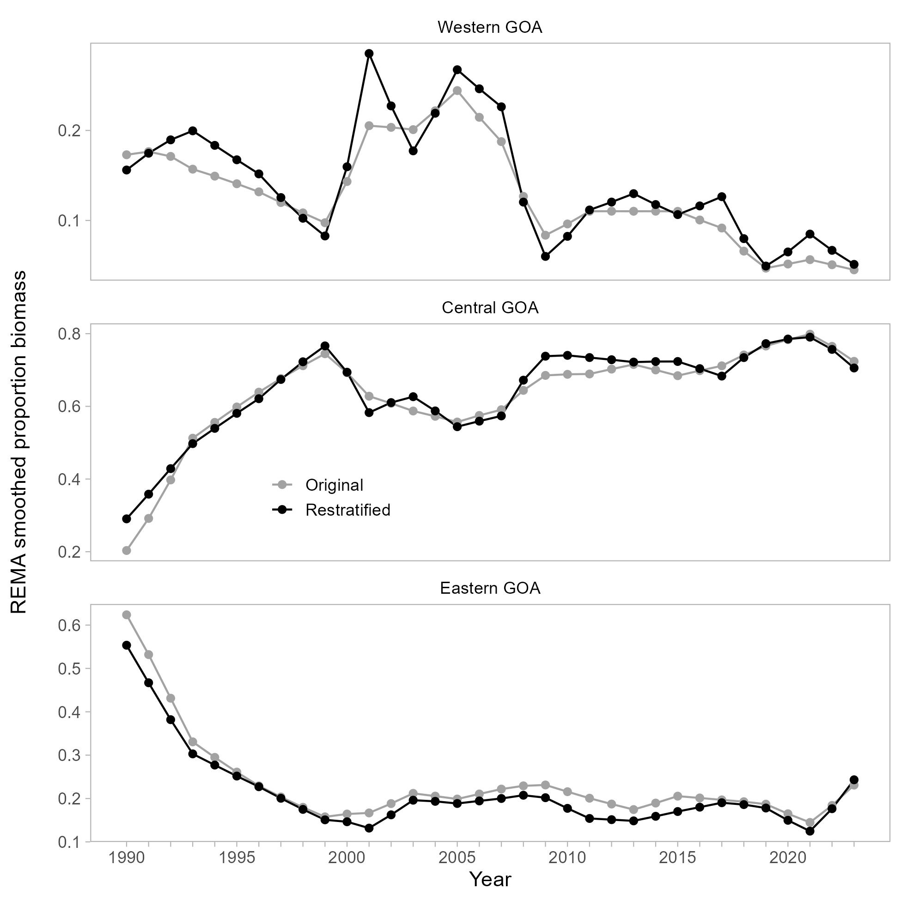
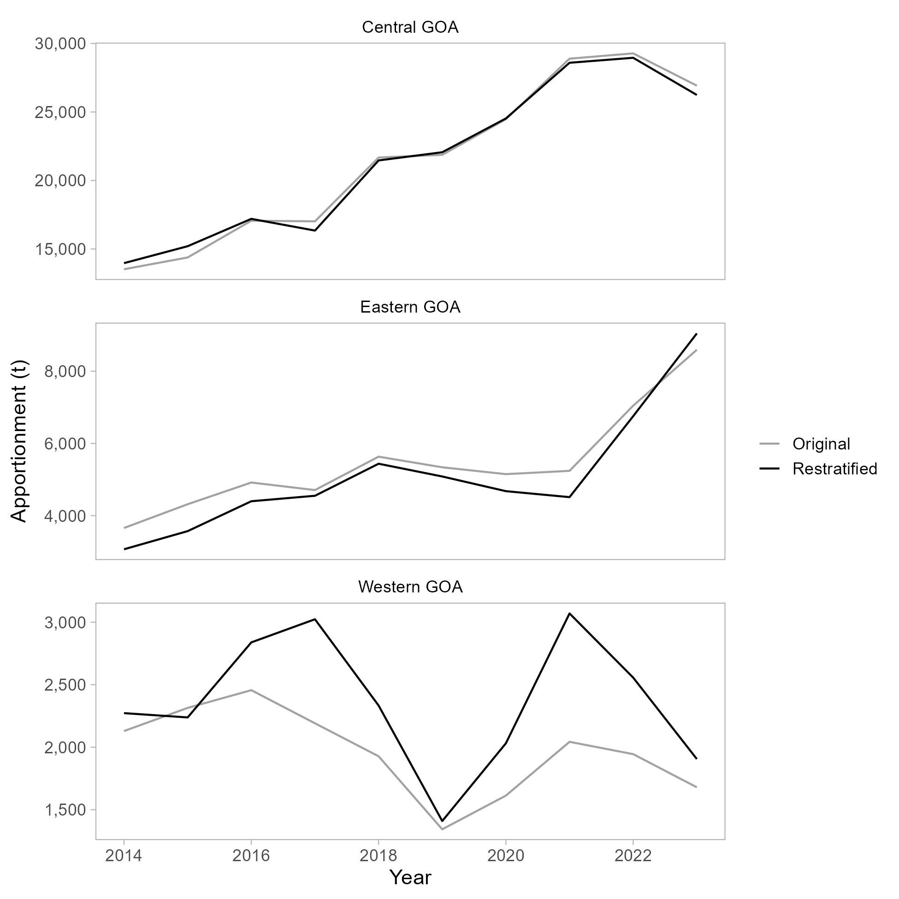
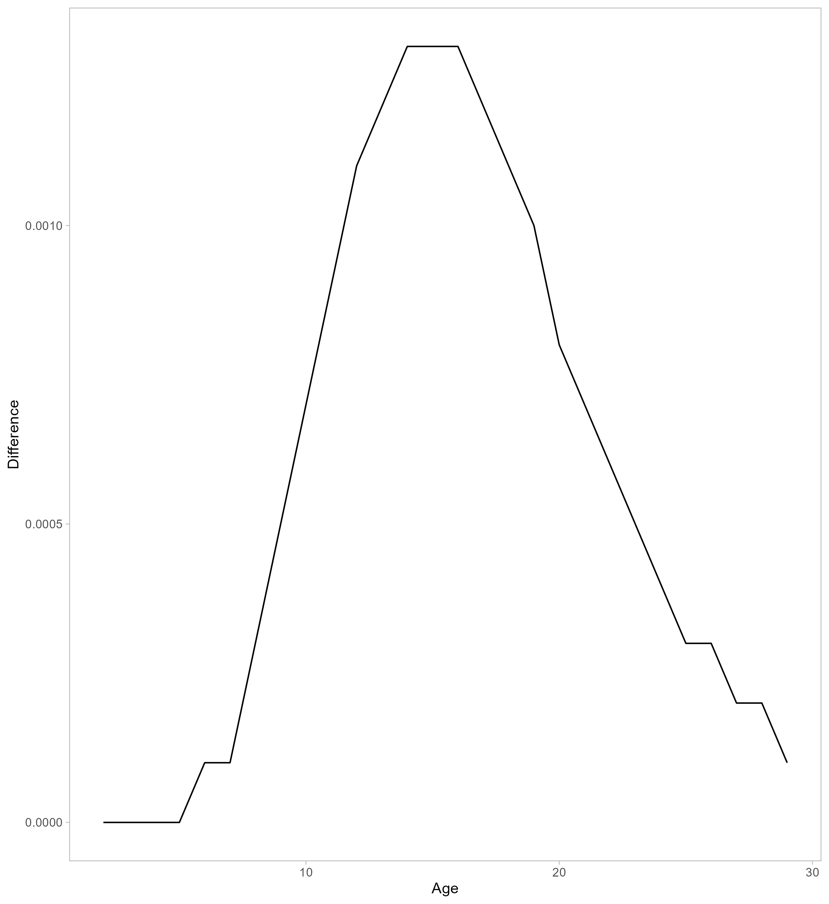
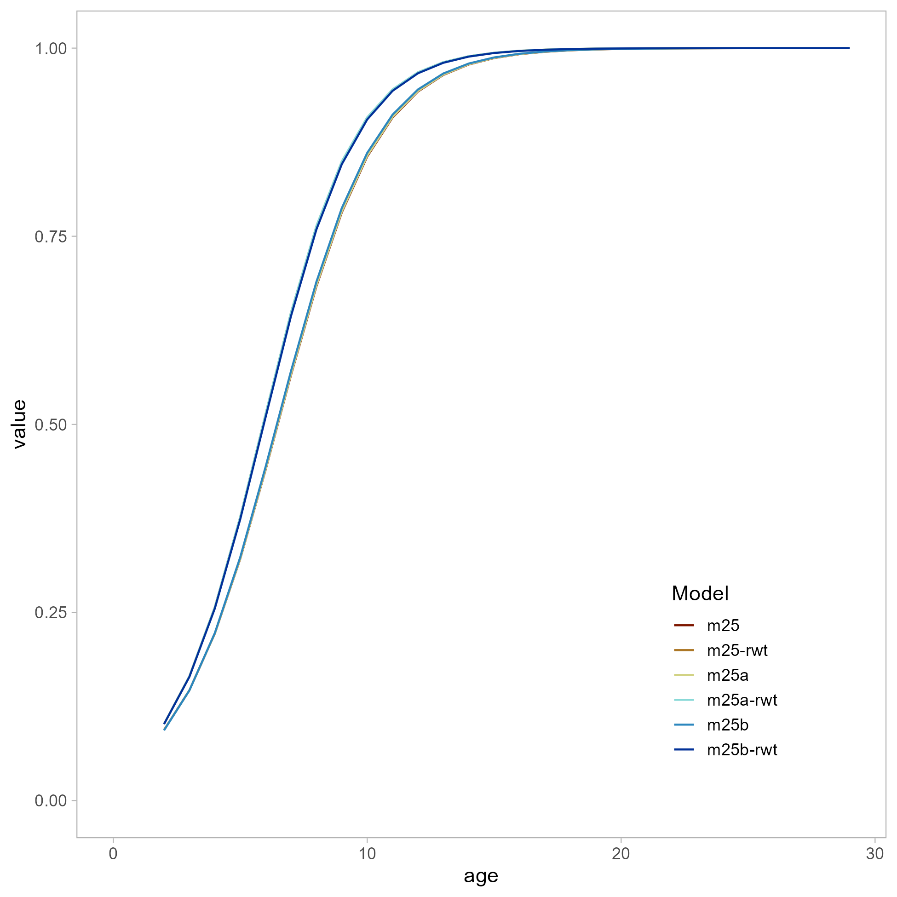

Item | ADMB | RTMB | Difference |
|---|---|---|---|
M | 0.0743 | 0.0743 | 0.0000 |
q | 1.7361 | 1.7361 | 0.0000 |
Log mean recruitment | 4.4492 | 4.4492 | 0.0000 |
Log mean F | -2.6131 | -2.6131 | 0.0000 |
2024 Total biomass | 649,941.00 | 649,941.11 | 0.1070 |
2024 Spawning biomass | 227,991.00 | 227,991.19 | 0.1945 |
2024 OFL | 47,466.30 | 47,466.28 | -0.0154 |
2024 F OFL | 0.1192 | 0.1192 | 0.0000 |
2024 ABC | 39,718.90 | 39,718.89 | -0.0104 |
2024 F ABC | 0.0990 | 0.0990 | 0.0000 |
Gulf of Alaska Pacific Ocean Perch - September 2025 Groundfish Plan Team
1 Introduction
With a change in lead author for the 2025 Pacific ocean perch assessment, only a few incremental model changes and data examinations are being put forth. The most significant update is the migration of the assessment model from the ADMB framework to RTMB. A comparison shows that the new model’s results are consistent with the previous version, with negligible differences arising from numerical precision.
All analyses originate from the base model (model 2020.1) using 2023 data inputs.
2 Model Changes
2.1 Bridging the Assessment from ADMB to RTMB - model 25
The RTMB assessment model and the associated comparison code are available on GitHub.
The RTMB model was optimized using the same parameter inputs as the ADMB model, though these inputs were unbounded in the RTMB implementation.
Key outputs (e.g., total biomass, spawning biomass) are equivalent, as shown in Table 1. The negative log-likelihood values are also nearly identical, differing only by a few decimal points (Table 2).
Overall, the RTMB model successfully replicates the ADMB model (Figure 1, Figure 2), differences can be attributed to how the two programs round numerical values.
Likelihood | ADMB | RTMB | Difference |
|---|---|---|---|
Catch | 0.2181 | 0.2181 | 0.0000 |
Survey | 16.4416 | 16.4416 | 0.0000 |
Fish age | 25.0028 | 25.0028 | 0.0000 |
Survey age | 29.2822 | 29.2822 | 0.0000 |
Fish size | 66.2258 | 66.2259 | 0.0001 |
Recruitment | 10.6027 | 10.6027 | 0.0000 |
F regularity | 6.1405 | 6.1405 | 0.0000 |
SPR penalty | 0.0000 | 0.0000 | 0.0000 |
M prior | 1.8299 | 1.8299 | 0.0000 |
q prior | 0.4241 | 0.4241 | 0.0000 |
Sigma R prior | 7.9849 | 7.9849 | 0.0000 |
Sub total | 164.1526 | 164.1527 | 0.0001 |


2.2 Survey likelihood bias correction (Model 25.1)
Historically, the GOA POP assessment has used a simplified negative log-likelihood for survey biomass, which is a least-squares approximation of the lognormal distribution:
\[\begin{equation} \text{nll} = \lambda \sum_y \frac{ \left( \log(I_y) - \log(\hat{I}_y) \right)^2 }{ 2 \left( \frac{SE(I_y)}{I_y} \right)^2 } \end{equation}\]
This simplified form is computationally convenient but does not account for the non-zero mean bias inherent in a lognormal distribution. As a result, the expected value of the model’s prediction does not correctly align with the survey data on the original arithmetic scale.
To address this, the likelihood function has been updated to the full form of the lognormal negative log-likelihood. This approach incorporates a bias correction term to ensure the model’s expectation is properly centered. The updated likelihood is:
\[\begin{equation} \text{nll} = \lambda \sum_{y} \left[ \log(\sigma_y) + \frac{1}{2} \left( \frac{ \log\left( \frac{I_y}{\hat{I}_y^{bc}} \right) }{\sigma_y} \right)^2 \right] \end{equation}\]
where Here, \(\sigma_y\) is the standard deviation on the log scale, and _y^{bc} is the bias-corrected model prediction. These terms are defined as:
\[\begin{equation} \sigma_y = \sqrt{ \log \left( 1 + \frac{SE(I_y)^2}{I_y^2} \right) } \quad \text{and} \quad \hat{I}_y^{bc} = \hat{I}_y \times \exp\left( \frac{\sigma_y^2}{2} \right) \end{equation}\]
2.3 Fishery selectivity code correction (Model 25.2)
In the GOA POP assessment, fishery selectivity is modeled using four distinct time blocks. An error was identified in the previous ADMB code where the selectivity curve for the second time block was not scaled to a maximum value of one. The selectivity blocks and their respective modeling approaches are defined as:
- Block 1 (≤ 1976): Estimated using a logistic selectivity curve.
- Block 2 (1977–1995): Calculated as the average of the curves from Block 1 and Block 3. The scaling error was found in the implementation of this block.
- Block 3 (1996–2006): Estimated using a double logistic selectivity curve.
- Block 4 (> 2006): Estimated using a double logistic selectivity curve.
Failing to scale the Block 2 curve to one can lead to an underestimate of fishing mortality at age for that period. However, the impact of correcting this error is minimal, with negligible changes to model outputs (Figure 7), likelihoods (Table 4), and parameters (Table 5).
This correction has been implemented in the current model and will be carried forward in all subsequent analyses.
2.4 GOA re-stratification
2.4.1 Impacts of GAP re-stratification on POP assessment (Model 25.2a)
The AFSC RACE Groundfish Assessment Program (GAP) has been revamping their data products over the last few years for improved reproducibility and consistency. Some of this has resulted in changes to the data products. For instance, there are known mismatches in size and age compositions between the (soon to be) archived data and the gap_products data. Historically, there were some hauls in the AI/GOA where a catch weight was recorded for a species without an associated count. The old biomass scripts for the AI-GOA would assume these NA catch values to be zero, which negatively biased abundance estimates calculated from these hauls. The updated database is therefore expected to have slightly higher abundance estimates for years in which these hauls occurred, with subsequent changes to the age and length composition data. Optimally all data pulls will be transitioned to the new GAP defined database(s), do be in line with contemporary standards from hereon.
One substantial change to the GAP-managed databases is a re-stratification of the GOA. Due to the area-specific design-based model expansions the biomass and numbers of POP vary by area, and the total abundance estimate changes (Figure 3).

The overall negative log likelihood increases, which is predominately driven by an increase in the recruitment component (Table 4). There are substantial increases in biomass and an increase in q (Table 5) when the re-stratified survey estimate is included in the assessment.
2.4.2 Impacts of GAP re-stratification on POP apportionment
Area apportionment is completed by applying the REMA model to estimate random effects parameters that control the variation of estimated biomass across years and areas, and is fit to the trawl survey biomass estimates (with associated variance) for the Western, Central, and Eastern GOA. Changes to the survey biomass stratification will affect this apportionment strategy.
Re-stratification increases the biomass estimates for all regions in most years (Figure 4). However, the proportions by area do not substantially change (Figure 5).


As such, the area apportionments do not change substantially (Figure 6 and Table 3).

Model | Year | Western GOA | Central GOA | Eastern GOA | ABC |
|---|---|---|---|---|---|
Restratified | 2014 | 2,272 | 13,966 | 3,071 | 19,309 |
Original | 2,129 | 13,520 | 3,660 | ||
Restratified | 2015 | 2,238 | 15,201 | 3,573 | 21,012 |
Original | 2,314 | 14,380 | 4,318 | ||
Restratified | 2016 | 2,838 | 17,199 | 4,400 | 24,437 |
Original | 2,456 | 17,063 | 4,918 | ||
Restratified | 2017 | 3,023 | 16,343 | 4,551 | 23,918 |
Original | 2,191 | 17,018 | 4,709 | ||
Restratified | 2018 | 2,333 | 21,464 | 5,438 | 29,236 |
Original | 1,927 | 21,675 | 5,634 | ||
Restratified | 2019 | 1,409 | 22,061 | 5,085 | 28,555 |
Original | 1,343 | 21,872 | 5,340 | ||
Restratified | 2020 | 2,031 | 24,528 | 4,679 | 31,238 |
Original | 1,613 | 24,475 | 5,150 | ||
Restratified | 2021 | 3,070 | 28,593 | 4,514 | 36,177 |
Original | 2,043 | 28,893 | 5,241 | ||
Restratified | 2022 | 2,557 | 28,957 | 6,754 | 38,268 |
Original | 1,944 | 29,279 | 7,045 | ||
Restratified | 2023 | 1,905 | 26,242 | 9,045 | 37,193 |
Original | 1,679 | 26,922 | 8,592 |
2.5 Management comparison tables

Likelihood | m25 | m25a | m25b | 25c |
|---|---|---|---|---|
Catch | 0.2181 | 0.2193 | 0.2193 | 0.2061 |
Survey | 16.4416 | 6.6600 | 6.6589 | 7.8463 |
Fish age | 25.0028 | 25.0171 | 25.0184 | 24.8730 |
Survey age | 29.2822 | 29.2942 | 29.2923 | 28.7113 |
Fish size | 66.2259 | 66.2291 | 66.2235 | 66.1899 |
Recruitment | 10.6027 | 10.7539 | 10.7586 | 14.0838 |
F regularity | 6.1405 | 6.1383 | 6.1403 | 6.1808 |
SPR penalty | 0.0000 | 0.0000 | 0.0000 | 0.0000 |
M prior | 0.4241 | 0.4270 | 0.4273 | 1.1263 |
q prior | 1.8299 | 1.8128 | 1.8124 | 1.4400 |
Sigma R prior | 7.9849 | 7.9551 | 7.9542 | 7.3143 |
Sub total | 164.1527 | 154.5068 | 154.5053 | 157.9717 |
Item | m25 | m25.1 | m25.2 | m25.2a |
|---|---|---|---|---|
M | 0.0743 | 0.0743 | 0.0743 | 0.0728 |
a50-1 | 6.2965 | 6.2969 | 6.2963 | 6.3090 |
a50-2 | 2.5239 | 2.5240 | 2.5242 | 2.5385 |
a50-3 | 2.7987 | 2.7998 | 2.7998 | 2.8022 |
delta-1 | 1.9582 | 1.9587 | 1.9576 | 1.9737 |
delta-2 | 5.0275 | 5.0286 | 5.0298 | 5.1256 |
delta-3 | 9.6824 | 9.6917 | 9.6923 | 9.8612 |
a50 survey | 5.4801 | 5.4923 | 5.4926 | 5.6511 |
delta survey | 5.8192 | 5.8285 | 5.8288 | 5.9528 |
q | 1.7361 | 1.7385 | 1.7388 | 2.2501 |
Log mean recruitment | 4.4492 | 4.4480 | 4.4479 | 4.4091 |
Log mean F | -2.6131 | -2.6119 | -2.6126 | -2.5873 |
2024 Total biomass | 649,941.11 | 652,769.68 | 652,699.68 | 676,213.18 |
2024 Spawning biomass | 227,991.19 | 229,008.22 | 228,982.32 | 240,873.48 |
2024 OFL | 47,466.28 | 47,690.25 | 47,684.76 | 49,064.05 |
2024 F OFL | 0.1192 | 0.1192 | 0.1192 | 0.1162 |
2024 ABC | 39,718.89 | 39,902.03 | 39,897.34 | 41,063.55 |
2024 F ABC | 0.0990 | 0.0990 | 0.0990 | 0.0965 |
## Research Models
2.6 Have data conflicts…
Conflict with Age Data:
- The most dramatic shifts occur in parameters related to selectivity and growth.
Impact on Mortality and Biomass:
- Changes in selectivity have a domino effect.
- Estimate for natural mortality (M) drop significantly, and as a result, the total and spawning biomass estimates roughly double.
Influence on Management Advice:
- Ultimately, this data conflict leads to a vastly different perception of the stock’s productivity and status, as reflected in the OFL and ABC calculations
3 Examinations
3.1 Survey Selectivity
Random walk penalty on survey selectivity parameter \(\log(a_{50, S, t})\) over time, penalized as:
\[ \text{nll}_{slx\_srv} = \sum_{t=2}^{T_S} \frac{\left( \log a_{50, S, t} - \log a_{50, S, t-1} \right)^2}{2\sigma_{\text{slx}, S}^2} \]
where:
- \(a_{50, S, t}\) is the age at 50% selectivity for the survey in year \(t\),
- \(\sigma_{\text{slx}, S}\) is the standard deviation controlling the smoothness of the random walk.

3.2 Fishery selectivity
- Double normal time blocks (last 2) - no improvement
- Logistic time blocks (last 2) - similar overall likelihood, slight reduction in biomass
- Random walk on a50 - slightly increased overall likelihood - increases biomass, q = 2.57
- Random walk on a50 w/time-varying q lower overall likelihood - mostly due to recruitment, major recruit shift (doubles+) and associated almost double biomass - very high M (0.14) - held sigma_q and sigma_rw fixed
3.3 Cohort smoothing
- worse overall likelihood, slight increase in biomass
3.4 M prior
Free up cv M from 0.1 to 0.31
- best overall likelihood, M increases to 0.986, biomass increases